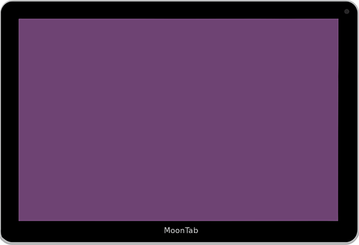

<section class="section project-start">
 	<div class="wrap project-start__wrap">
 		<div class="m-wrap project-start__m-wrap">
 			<div class="project-start__content">
 				<h3>Проект «Старт»</h3>
 				<p>Возможность заявить о себе</p>
 				<span>Представляет первичную информацию, вид услуги, контактные данные</span>
 				<ul>
 					<li>Система управления на немецком или русском языках</li>
 					<li>3 страницы, 3 пункта меню</li>
 					<li>до 5 изображений</li>
 					<li>наполнение сайта предоставленными Вами текстами и изображениями</li>
 					<li>контактные данные</li>
 					<li>загрузка сайта на сервер и тест на функциональность</li>
 					<li>Демонстрационную версии сайта Старт Вы можете посмотреть <a href="#">ЗДЕСЬ</a></li>
 				</ul>
 			</div>
 			<div class="project-start__img">
 				
 			</div>
 		</div>
 	</div>
</section>
